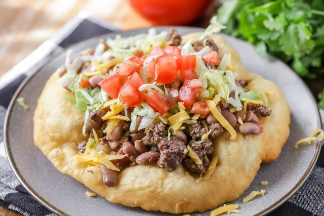

Frybread

Frybread - Native American bread!
Frybread is a traditional Native American food that is essentially a
flatbread made by deep-frying a dough made from flour, salt, water, and
sometimes baking powder. The dough is typically rolled or stretched out
into a circular or oblong shape and then fried in hot oil until it becomes
puffy and golden brown on the outside with a fluffy interior. Frybread can
be served plain or topped with a variety of sweet or savory toppings such
as honey, powdered sugar, cinnamon, jam, or fruit for a sweet version, or
with ground beef, beans, cheese, lettuce, tomatoes, and other toppings for
a savory version. Frybread is often served at powwows, festivals, and
other Native American gatherings and is an important part of Native
American culture and cuisine.
Ingredients
For the Frybread
- all-purpose flour
- baking powder
- salt
- warm water
- Vegetable oil for frying
For the toppings
- ground beef or turkey
- onion, chopped
- clove garlic, minced
- chili powder
- ground cumin
- paprika
- dried oregano
- Salt and pepper
- Shredded lettuce
- Diced tomatoes
- Shredded cheese
- Salsa
- Sour Cream
Steps
-
In a large mixing bowl, combine the flour, baking powder, and salt. Mix
well.
-
Gradually add the warm water, stirring with a wooden spoon or your
hands, until the mixture comes together to form a smooth dough. Knead
the dough for a few minutes until it is no longer sticky.
-
Cover the bowl with a damp towel and let the dough rest for about 15
minutes.
-
Meanwhile, in a large skillet, cook the ground beef or turkey over
medium-high heat until browned and cooked through, breaking it up into
small pieces as it cooks.
-
Add the chopped onion and garlic to the skillet and cook for a few
minutes until softened.
-
Stir in the chili powder, cumin, paprika, and oregano, and cook for
another minute or two until fragrant. Season with salt and pepper to
taste.
-
In another large skillet, heat about an inch of vegetable oil over
medium-high heat until hot.
-
Divide the dough into 8-10 equal pieces and roll each piece out into a
flat circle or oval, about 1/4 inch thick.
-
Carefully place one or two pieces of the dough into the hot oil and fry
until golden brown on both sides, flipping once. Repeat with the
remaining dough pieces.
- Drain the fried dough on paper towels and keep warm.
-
To assemble the frybread tacos, place a spoonful of the ground beef
mixture onto each piece of frybread, followed by some shredded lettuce,
diced tomatoes, shredded cheese, salsa, and sour cream.
- Serve hot and enjoy!
Home